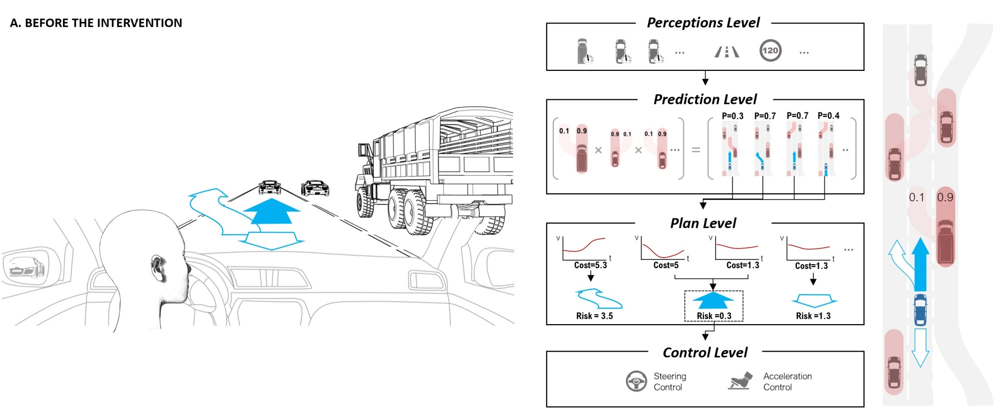
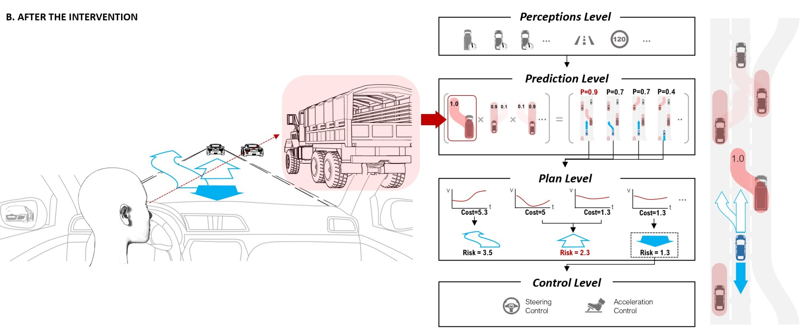
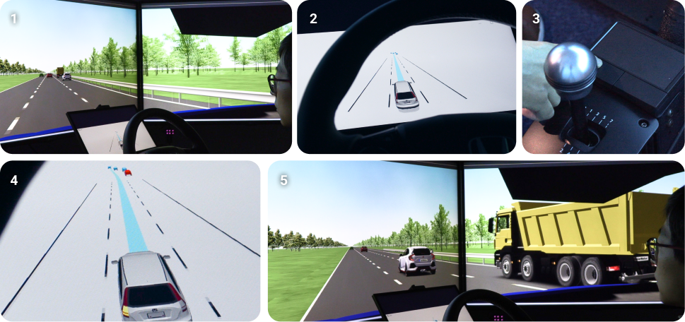
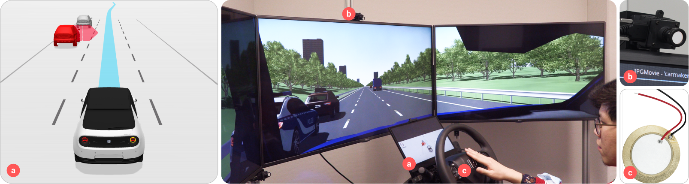
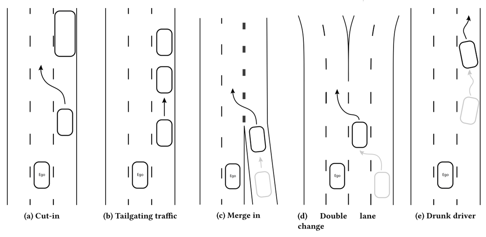

Human-Vehicle Cooperation on Prediction-Level
It seems that autonomous driving systems are substituting human responsibilities in the driving task. However, this does not mean that vehicles should not interact with their driver anymore, even in case of full automation. One reason is that the automation is not yet advanced enough to predict other road user's behavior in complex situations, which can lead to sub-optimal action choices, decrease comfort and user experience. In contrast, a human driver may have a more reliable understanding of other road users' intentions which could complement that of the automation. We implement an approach that lets a human driver quickly and intuitively supplement scene predictions to an autonomous driving system by gaze.
Intevention on prediction models
Processing flow of prediction level cooperation in the iTFA AD framework. A human prediction about a cut-in of the truck changes internal predictions for future scene development and accordingly optimal vehicle behavior.
 The interaction flow
The interaction flow of the second scenario: 1) A sports car is driving behind a truck. 2) The system does not predict the car to change its lane 3) The driver clicks the button while gazing on the sports car indicating that it may change lane. 4) After the system has received the driver's input: a sound feedback is provided; the sports car is highlighted in red in the GUI; iTFA changes the ego vehicle's planned trajectory to a lane change. 5) The system maneuvers the vehicle accordingly.
The gaze calculation method
Gaze-vector and distance-based vehicle selection method
Further improvement
Gaze-Tap instead of gaze-button as input
To make the interaction more intuitive, the button-pressing was replaced by double-tapping as trigger of the intervention (c); The steering wheel includes a piezoelectric sensor (c) to detect the double-tapping gesture. The gui-output was also improved (a).
Scenarios
More scenarios were implemented for testing
